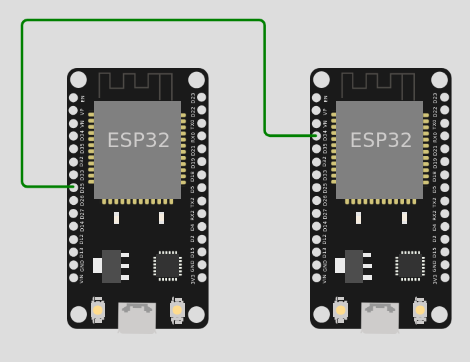
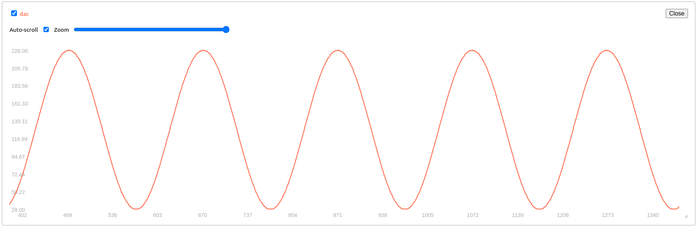

It is time to Work with a real device
Fact
Exactly the same code you wrote in the simulator, works on the real device, but in the real device you can do even more!
- You can easily download the code from Wokwi in the form of a zip project file.
- One convenient possibility is to use Arduino IDE
- Since we are using the ESP32, you have to follow these intructions
- Select the DOIT ESP32 DEVKIT V1 as in the picture below and upload the code

- Another option is to use PlatformIO. In particular I like the vscode extension.
- To work with the ESP32, this is the minimal setup for the platformio.ini file
[env:esp32dev]
platform = espressif32
board = esp32dev
framework = arduino
; Custom Serial Monitor port
monitor_port = /dev/ttyUSB0
; Custom Serial Monitor speed (baud rate)
monitor_speed = 115200
From Wokwi to a real device
- Compile the code and on the code editor press F1 to download the firmware. It is a .bin file, let's name it sketch.bin file
-
esptool.py --chip esp32 --port "/dev/ttyUSB0" --baud 921600 --before default_reset --after hard_reset write_flash -z --flash_mode keep --flash_freq keep --flash_size keep 0x1000 "bootloader.bin" 0x8000 "partitions.bin" 0xe000 "boot_app0.bin" 0x10000 "sketch.bin"Once partitions and bootloader are uploaded, you can simply upload the sketch. To upload for the first time the partitions and the bootloader you can simply used arduino IDE -
esptool.py --chip esp32 --port "/dev/ttyUSB0" --baud 921600 --before default_reset --after hard_reset write_flash -z --flash_mode keep --flash_freq keep --flash_size keep 0x10000 ./sketch.bin
In principle you can even use a Web tool
Partition Table
| # Name | Type | SubType | Offset | Size | Flags |
|---|---|---|---|---|---|
| nvs | data | nvs | 0x9000 | 0x5000 | |
| otadata | data | ota | 0xe000 | 0x2000 | |
| app0 | app | ota_0 | 0x10000 | 0x140000 | |
| app1 | app | ota_1 | 0x150000 | 0x140000 | |
| spiffs | data | spiffs | 0x290000 | 0x160000 | |
| coredump | data | coredump | 0x3F0000 | 0x10000 |
A virtual signal
We consider two ESP32 connected as in the following picture

The node on the left works as a virtual signal, it generates a signal using the DAC on PIN 25. The node on the right sample the generated signal by the ADC and print the FFT.
#include <Arduino.h>
// Define the DAC and ADC pins
const int dacPin = 25; // DAC1 (GPIO 25) for sinusoid output
// Parameters for the sine wave
const int amplitude = 100; // Amplitude of the sine wave (max 255 for 8-bit DAC)
const int offset = 128; // DC offset (middle of the DAC range)
const float signalFrequency = 5.0; // Frequency of the sine wave in Hz
int samplingFrequencyDAC = 1000; // sampling theorem should be at least 2*frequency
void setup() {
Serial.begin(115200);
// Initialize DAC pin (GPIO 25)
dacWrite(dacPin, 0); // Initialize DAC with a low value
}
void loop() {
for (int i = 0; i < samplingFrequencyDAC; i++) {
int sineValue = (int)(amplitude * sin(2.0 * PI * signalFrequency * i / samplingFrequencyDAC) + offset);
dacWrite(dacPin, sineValue); // Write to DAC (8-bit value)
Serial.print(">");
Serial.print("dac:");
Serial.println(sineValue);
delay(round(1.0/samplingFrequencyDAC*1000));
}
}

#include <Arduino.h>
const int adcPin = 34; // ADC1 (GPIO 34) for reading the sinusoid
int samplingFrequencyADC = 500; // sampling theorem should be at least 2*frequency
const uint16_t samples = 512;
void setup() {
Serial.begin(115200);
analogReadResolution(10);
analogSetAttenuation(ADC_11db); // Set ADC attenuation (default 0dB)
}
void loop() {
for(int i=0; i<samples; i++)
{
Serial.print(">");
Serial.print("adc:");
Serial.println(analogRead(adcPin)-512);
delay(round(1.0/samplingFrequencyADC*1000));
}
}
A possible alternative use the PC
python3 -m pip install sounddevice
# Use the sounddevice module
# http://python-sounddevice.readthedocs.io/en/0.3.10/
import numpy as np
import sounddevice as sd
import time
# Samples per second
sps = 44100
# Frequency / pitch
freq_hz = 2
# Duration
duration_s = 5.0
# Attenuation so the sound is reasonable
atten = 1.0 # 0.3
# NumpPy magic to calculate the waveform
each_sample_number = np.arange(duration_s * sps)
waveform = np.sin(2 * np.pi * each_sample_number * freq_hz / sps)
waveform_quiet = waveform * atten
# Play the waveform out the speakers
sd.play(waveform_quiet, sps)
time.sleep(duration_s)
sd.stop()
Fast Fourier Transform (FFT)
#include <Arduino.h>
#include "arduinoFFT.h"
// Define the DAC and ADC pins
const int adcPin = 36; // ADC1 (GPIO 34) for reading the sinusoid
int samplingFrequencyADC = 27; // sampling theorem should be at least 2*frequency
const uint16_t samples = 64;
double vReal[samples];
double vImag[samples];
/* Create FFT object */
ArduinoFFT<double> FFTADC = ArduinoFFT<double>(vReal, vImag, samples, samplingFrequencyADC);
void setup() {
Serial.begin(115200);
analogReadResolution(10);
analogSetAttenuation(ADC_11db); // Set ADC attenuation (default 0dB)
}
void loop() {
for(int i=0; i<samples; i++)
{
vReal[i] = analogRead(adcPin)-512;
vImag[i] = 0;
/*
Serial.print(">");
Serial.print("adc:");
Serial.println(analogRead(adcPin)-512);
*/
delay(round(1.0/samplingFrequencyADC*1000));
}
FFTADC.windowing(FFTWindow::Hamming, FFTDirection::Forward);
FFTADC.compute(FFTDirection::Forward);
FFTADC.complexToMagnitude();
double x = FFTADC.majorPeak();
Serial.print("ADC FFT: ");
Serial.println(x, 6);
}